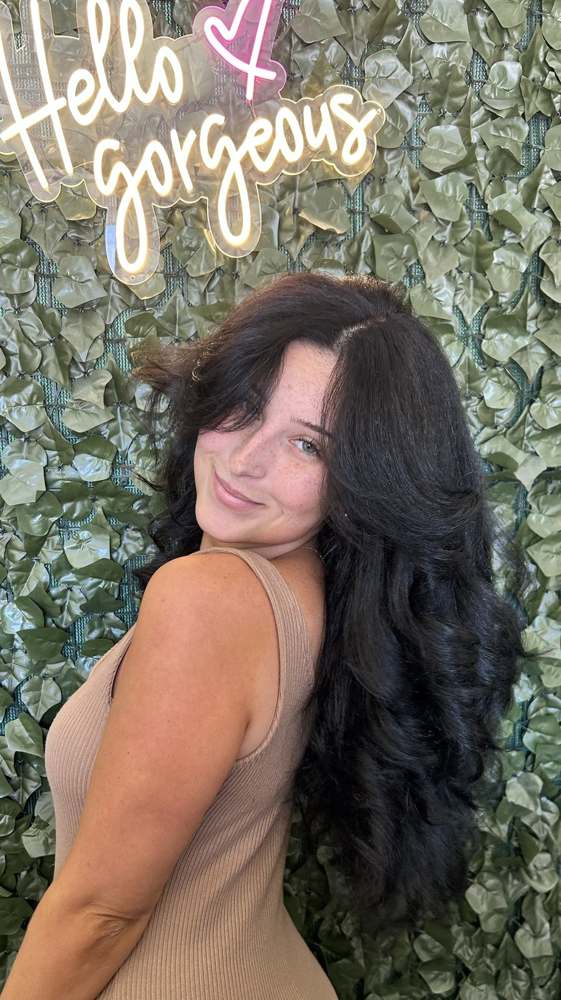

01
Cut & Style
A real consultation, then a cut that grows out as well as it goes in. Includes wash and a finished blowout.

Ponchatoula · Louisiana
Independent stylist on the Northshore. Balayage built for Louisiana humidity, color corrections that don't punish your strands, and a chair that feels like Friday.
hi, friend —
Some salons feel like a chore. This one feels like a Friday afternoon — long visits, real conversation, and hair you actually want to take selfies of when you leave.
Services
Pricing varies with length, density, and the work involved — expect a real consult before any color or correction.
01
A real consultation, then a cut that grows out as well as it goes in. Includes wash and a finished blowout.
02
Single-process, root touch-ups, gloss, and tonal refreshes. Custom-mixed at the bowl, never poured straight out of a tube.
03
Hand-painted dimension or classic foil work — built to outlast the season, not just the appointment.
04
Wedding mornings, prom nights, and big-room moments. Trials encouraged. On-site available across the Northshore.
05
Peekaboo color, money pieces, hair tinsel, full vivids. Strawberry Festival energy on demand.
06
The "I tried it at home" fix. Multi-step, chemistry-aware, zero judgment. Always starts with a consult.
The Work
A real client, a real Tuesday. Walked in tangled, brassy, and over it. Walked out as the photo on the right. Drag the slider.


Color correction & chop · single appointment
Gallery
A small slice. Follow along on Instagram for the full reel.


Bridal & Big Days
Trials, day-of styling, and on-site work for parties of any size — brides, mamas, bridesmaids, the works. Saturdays book out months ahead, so reach out early.
Inquire about your date
Photo placeholder — pending Abi's headshot.
Behind the chair
Independent stylist, perpetual student of color, and the reason your roommate suddenly looks expensive.
[Bio to confirm with Abi.] Born in [hometown] and trained at [school/mentor]. Behind the chair since [year]. She's drawn to color corrections, balayage that survives a Louisiana summer, and the kind of conversation that makes a four-hour appointment feel like a long lunch.
Words from the chair
[Replace with current Google reviews — 4 to 6 lines work best.]
Abi listened to what I actually wanted, then gave me something better. The blonde finally looks like me — not somebody else's Pinterest board.
Best haircut I've had in years. The shape grew out beautifully — eight weeks later it still looked intentional.
I came in for a color correction and left feeling like a person again. She's a lifesaver and a magician.
Good to know
Cuts run about an hour. Color is two to four. Corrections, balayage, and bridal trials can be all afternoon — Abi will tell you exactly when you book.
Booked appointments first. If a window opens up, walk-ins are welcome — text ahead and she'll let you know.
[Confirm with Abi: typical industry policy is 24-hour notice, with deposits forfeited under that window.]
Bookings run through Square. If a deposit applies (it usually does for color and bridal), it's collected at checkout.
Day-old hair is great. Skip heavy product. Bring reference photos if you have them — even fuzzy ones from your camera roll.
Yes — cuts, color, and shape work for waves, curls, and coils. Bring a fresh wash-and-go so she can see your texture.
[Confirm with Abi — typical answer: free out front / shared lot / street.]
Visit
Book
Booking lives on Square — 24/7 availability, instant confirmation, and the deposit (if any) is handled at checkout. No phone tag.
Book on Square[Square Appointments embed will replace this button once Abi finishes setup.]